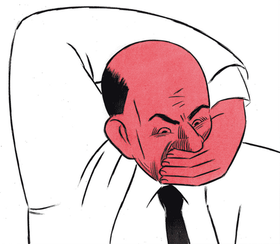

approcio alternativo di autodifesa digitale
Claudio Agosti vecna@globaleaks.org
L'autore stesso, in una lettera autobiografica, lo definisce come il romanzo "più amaro di tutti, profondamente umoristico, di scomposizione della vita".Ognuno di noi è molteplici IO: gli attacchi digitali, sfruttano la sovrapposizione delle nostre reti sociali.
L'autodifesa digitale è stata concepita come un'analisi del rischio e individuazione del peggior scenario possibile

- Non tutti possono godere dello stesso modello di sicurezza
- I contesti più delicati sono in mano a persone. Esse hanno una vita digitale con barriere abbassate come tutti.
La protezione è resa più difficile da:
- Tutti i tuoi contesti "affiancati"
- Capacità di potenziare i dispositivi
- Tutto subito!
- Poter abbassare l'allerta in certe condizioni
Profilo di rischio: Alto
Reti: Lavorativa/Editoriale, Personale
Training: possibile
Reti: Lavorativa/Editoriale, Personale
Training: possibile

L'autocensura avviene vorresti rivolgerti con un registro, standard, idee scelte per le interlocutrici.

La creazione di identità multiple è correntamrnte osteggiata, ed i meccanismi di associazione che un fornitore di servizio ha per ricollegarti, sono maggiori di quello che vediamo.
Ma almeno, all'interno del Social Network e dall'OSINT, le identità possono non essere correlate.
l'OTT avrebbe possibilità di correlare fingerprint ed attività. dipende dal modello di rischio.

Attacchi mirati sfruttano anche ambienti sociali diversi
Ad esempio, amicizie impersonate perchè lavori in una specifica azienda

Profilo di rischio: Medio
Reti: Pubblica (ma con identità riservata sacrificabile ?)
Training: minimale
Risorse: cross-nazionalità di Internet *
Reti: Pubblica (ma con identità riservata sacrificabile ?)
Training: minimale
Risorse: cross-nazionalità di Internet *

Profilo di rischio: Medio/Alto?
Reti: Personale + Aperta
Rischio: se sono chiuso, sto da solo. se sono aperto, vengo attaccato o infiltrato.
Reti: Personale + Aperta
Rischio: se sono chiuso, sto da solo. se sono aperto, vengo attaccato o infiltrato.
Profilo di rischio: Medio/Alto
Reti: Interna
Evento: Infiltrazione sfrutta mancanza di policy
Reti: Interna
Evento: Infiltrazione sfrutta mancanza di policy
- Attacchi: OSINT, Infiltrazione, Analisi del traffico
- Identità temporanea: Scopre contestuale, Rete da validarsi, VPN/Tor
- Identità dedicata: Scopre contestuale, OOB Trust, Tor/OTT :(
- Attività casuale: Servono utenti - Va ciclata, N/A, Casa ? o VPN
Superficie d'attacco
- Scovare login e password
- Intercettare il traffico
- Avere accesso ai dati conservati
- Violare il sistema tramite le sue interfaccie pubbliche
Come
- Riconoscere le reti piccolo mondo
- Profili separati e browser separati
- Account email temporanei, policy per password
- CubeOS
- Mobile: Non ho mai esplorato! (Knox?)